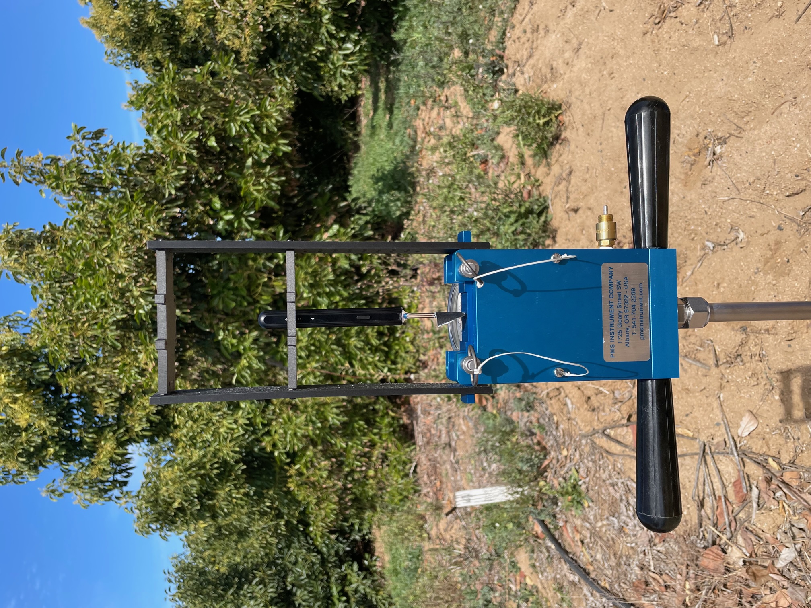

My research at
UCR's ARCS (Autonomous Robots and Control Systems) Lab
involves the designing of an autonomous smart pressure chamber
system to be mounted on a robot for in-situ field testing of stem water
potential of crops. The pressure chamber method of measuring stem water potential
is one of the most widely employed and proven methods in the industry, but it comes with its grievances: Lack of scalability and potentially dangerous to operate. At ARCS, one of our goals is to automate the SWP measurement process to increase the safety, precision, and efficiency over the current method.
The focus of my research within the
Agrobotics team has been to develop a computer vision model to take stem water potential measurements from avocado crops using
the Scholander pressure chamber. These measurements are significant in agriculture becuase they
are used as a proxy for orchard health and determine the optimal irrigation schedules for orchards. While building my vision model, I have also compiled a novel image dataset of wet and dry xylems from avocado and orange crops. My group intends to publish this dataset publicly and we have recently submitted a paper to the WACV 2023 conference.
The current results yielded by my vision model prove the potential and validity of our work, with the YOLOv5 CNN-based object detector we trained scoring high testing accuracy and a mAP score of 99.5%. The robust model was also able to discern between dry and wet xylem states between two different camera configurations, each with several different water expression cases. Most recently, we have trained and tested the newly released YOLOv6 and YOLOv7 networks. Both of these saw an improvement in overall accuracy and confidence, and they both can generalize well on the xylem dataset.
